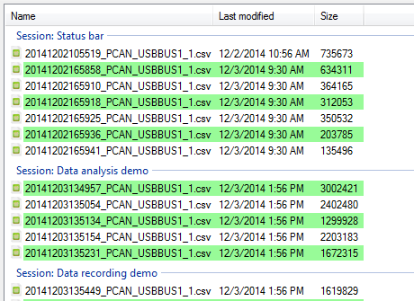
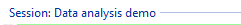
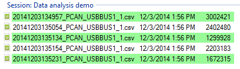
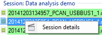

The logging data list contains actual data files that can be loaded into the data viewer window.

Each group of the list represents a record session.

Select all files that you want to load and press the ‘Enter’ key or click the ‘Load selected files’ button of the tool bar.

The data browser shows the two logging data formats. ‘*.csv’ files  for converted data file and ‘*.trc’ files
for converted data file and ‘*.trc’ files  for raw PCAN-Trace data file.
for raw PCAN-Trace data file.
‘*.csv’ files only can be loaded in the data viewer. Files with such extension appear with a green background.

‘*.trc’ files appear with a red background but they cannot be loaded directly into the data viewer. You need to convert those file (if it has not been done already) prior to see those data.

To get information about a particular record session of the list, right click one of its data files.

Click the ‘Session details’ menu to get the information window.

Created with the Personal Edition of HelpNDoc: Free Web Help generator